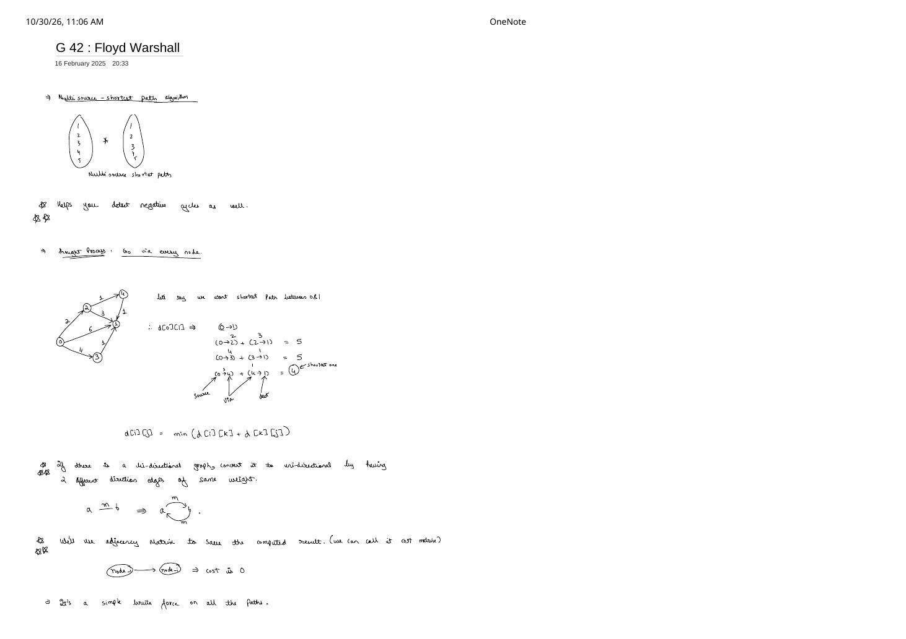
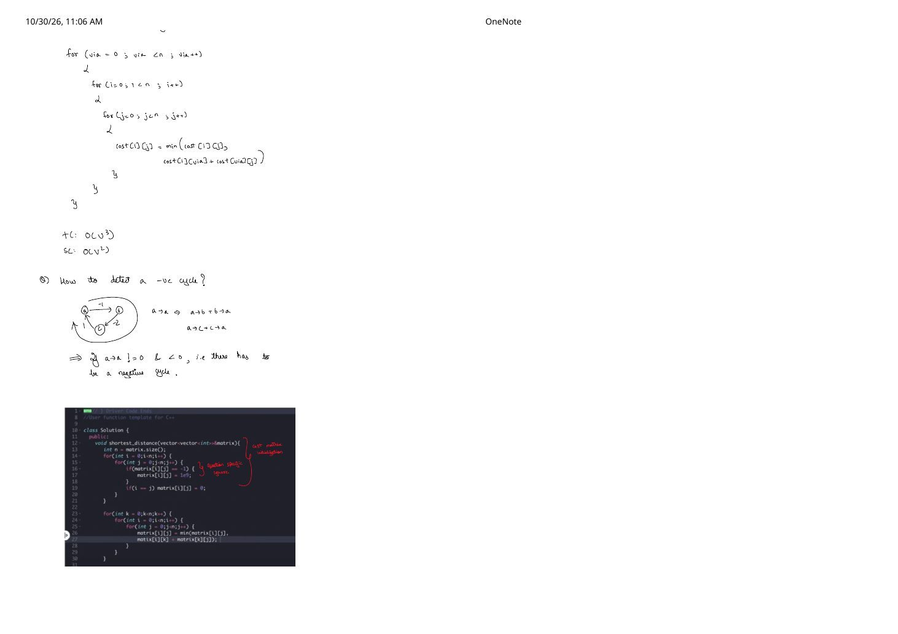

Floyd–Warshall Algorithm: Multi-Source All-Pairs DP & Negative Cycle Check (Striver G-42)
Expanded from handwritten competitive coding study note: 05_G_42_Floyd_Warshall.pdf
Whereas Dijkstra and Bellman–Ford compute shortest paths from a single starting vertex, the Floyd–Warshall algorithm (Striver G-42) is a multi-source (all-pairs) shortest-path algorithm: it computes the shortest distance $\text{cost}[i][j]$ from every vertex $i$ to every vertex $j$ across $V \times V$ pairs simultaneously in $\mathcal{O}(V^3)$ time — handling positive weights, negative weights, and negative-cycle detection in just four lines of core loop code.
1. Thought Process: "Go Via Every Intermediate Node" (Page 1)
Page 1 of the handwritten notes captures the entire intuition of Floyd–Warshall in five words: "Go via every node."
Suppose we want the shortest path from node $0$ to node $1$ in the 5-vertex directed graph drawn on page 1. Trusting the direct edge $0 \xrightarrow{6} 1$ gives cost $6$, so we systematically test routing from source $0$ to destination $1$ through every candidate intermediate vertex $k \in \{0, 1, 2, 3, 4\}$:
Cost Matrix & Bidirectional Rule (Page 1):
- We store answers in a $V \times V$ adjacency / cost matrix where diagonal entries start at $\text{cost}[i][i] = 0$, direct edges start at $\text{cost}[u][v] = w(u, v)$, and missing edges start at $\infty$ (
1e9). - If the input graph is bidirectional (undirected) with edge $a \stackrel{m}{\longleftrightarrow} b$, convert it into two directed entries $\text{cost}[a][b] = m$ and $\text{cost}[b][a] = m$.
2. All-Pairs Algorithm Comparison: When Does Floyd–Warshall Win?
| APSP Strategy | Time Complexity | Handles $w \lt 0$? | When to Choose |
|---|---|---|---|
| $V \times$ Bellman–Ford | $\mathcal{O}(V^2 \cdot E)$ ($\mathcal{O}(V^4)$ dense!) | Yes | Almost never — strictly dominated by Floyd–Warshall on dense graphs and Johnson's algorithm on sparse graphs. |
| $V \times$ Min-Heap Dijkstra | $\mathcal{O}(V \cdot E \log V)$ | No! | Best choice when all $w \ge 0$ and the graph is sparse ($V \le 2000, E \approx V$). |
| Floyd–Warshall DP | $\mathcal{O}(V^3)$ | Yes (+ detects negative cycles) | Best choice when $V \le 450$, graph is dense ($E \approx V^2$), or negative edge weights exist! |
3. Formal DP State, Loop Order & Why In-Place 2D Works
Page 1 notes casually that Floyd–Warshall looks like "a simple brute force on all the paths" — in fact, it is a textbook bottom-up dynamic program! Let $\text{dp}^{(k)}[i][j]$ denote the shortest distance from $i$ to $j$ whose intermediate vertices belong strictly to $\{0, 1, \dots, k\}$. When we unlock vertex $\text{via} = k$:
Bellman Optimality Recurrence for Phase $\text{via} = k$
$$\text{dp}^{(k)}[i][j] \;=\; \min\!\Big(\underbrace{\text{dp}^{(k-1)}[i][j]}_{\text{avoids } k},\;\; \underbrace{\text{dp}^{(k-1)}[i][k] + \text{dp}^{(k-1)}[k][j]}_{\text{visits } k \text{ once as highest-numbered hub}}\Big)$$Why can we overwrite a single 2D matrix cost[i][j] in-place instead of allocating a 3D $\mathcal{O}(V^3)$ table?
During phase $k$, updating cost[i][j] reads cost[i][k] (row $i$, column $k$) and cost[k][j] (row $k$, column $j$). What happens when those border cells themselves are updated during phase $k$?
$$\text{cost}[i][k] \leftarrow \min(\text{cost}[i][k],\; \text{cost}[i][k] + \text{cost}[k][k])$$
Whenever there is no negative cycle ($\text{cost}[k][k] = 0$), cost[i][k] and cost[k][j] do not change during phase $k$! Thus reading them before or after they are visited in the $(i, j)$ loops yields the exact same values, collapsing space from $\mathcal{O}(V^3)$ to $\mathcal{O}(V^2)$.
Classic Bug: Putting via ($k$) Inside i, j Instead of Outermost
Look back at the 5-node graph in Section 1! If you mistakenly write for i: for j: for via:, then when $i = 0, j = 1$ runs, $(i = 0, j = 4)$ has not been computed yet, so $\text{cost}[0][4]$ is still $\infty$. As a result, $\text{via} = 4$ computes $\infty + 1 = \infty$ and returns the wrong answer $5$ instead of $4$! Placing for (int via = 0; via < n; via++) outermost guarantees every 2-hop shortcut through $2$ (such as $0 \to 2 \to 4 = 3$) is locked in before phase $\text{via} = 4$ stitches $0 \rightsquigarrow 4 \to 1 = 4$.
4. Step-by-Step Cost Matrix Dry Run (5-Node Graph)
Edges: $(0,1,6), (0,2,2), (0,3,4), (2,4,1), (2,1,3), (3,1,1), (4,1,1)$. Let us watch row $0$ ($\text{cost}[0][0..4]$) evolve across all $5$ phases of via:
| Phase | New Paths Unlocked Across the Matrix | Row $0$: cost[0][0..4] |
|---|---|---|
| Init | Direct edges loaded; diagonal $\text{cost}[i][i] = 0$ | [0, 6, 2, 4, ∞] |
via = 0 |
No vertex has an incoming edge into $0$ ($\text{cost}[i][0] = \infty$ for $i \neq 0$) | [0, 6, 2, 4, ∞] |
via = 1 |
Node $1$ is a sink (no outgoing edges) | [0, 6, 2, 4, ∞] |
via = 2 |
$0 \to 2 \to 1$: $\min(6, 2+3) = \mathbf{5}$ $0 \to 2 \to 4$: $\min(\infty, 2+1) = \mathbf{3}$ |
[0, 5, 2, 4, 3] |
via = 3 |
$0 \to 3 \to 1$: $\min(5, 4+1) = 5$ (tie) | [0, 5, 2, 4, 3] |
via = 4 |
$0 \rightsquigarrow 4 \to 1$: $\min(5, \text{cost}[0][4] + \text{cost}[4][1]) = \min(5, 3+1) = \mathbf{4}$ ✓ $2 \to 4 \to 1$: $\min(3, 1+1) = \mathbf{2}$ |
[0, 4, 2, 4, 3] |
5. Detecting Negative Cycles via Diagonal Check (Page 2)
In any graph without negative cycles, the cheapest walk from any vertex $a$ back to itself is the 0-edge walk of cost $\text{cost}[a][a] = 0$. Now trace the 3-vertex negative cycle drawn on page 2:
$$a \xrightarrow{-1} b \xrightarrow{-2} c \xrightarrow{+1} a \qquad (\text{net cycle weight } = -1 - 2 + 1 = -2 \lt 0)$$- Initially $\text{cost}[a][a] = 0$, $\text{cost}[a][b] = -1$, $\text{cost}[b][c] = -2$, $\text{cost}[c][a] = +1$.
- After $\text{via} = b$: $\text{cost}[a][c]$ relaxes to $\text{cost}[a][b] + \text{cost}[b][c] = (-1) + (-2) = -3$.
- After $\text{via} = c$: $\text{cost}[a][a]$ relaxes to $\min(0,\, \text{cost}[a][c] + \text{cost}[c][a]) = \min(0,\, -3 + 1) = \mathbf{-2 \lt 0}$!
cost[i][i] < 0 for any $i$, the graph contains a negative-weight cycle! Unlike single-source Bellman–Ford, Floyd–Warshall automatically catches negative cycles in every connected component of the graph.
6. Clean C++ & Python Implementations (Striver G-42)
Below is the complete GeeksforGeeks / Striver G-42 C++ implementation matching page 2's code screenshot — where -1 represents "no edge" on input and output — strengthened with the INF reachability guards needed whenever negative weights can appear:
#include <bits/stdc++.h>
using namespace std;
class Solution {
public:
// Computes all-pairs shortest distances in-place (-1 means no edge).
// Returns false if a negative cycle exists, true otherwise.
bool shortest_distance(vector<vector<int>>& matrix) {
int n = static_cast<int>(matrix.size());
const int INF = 1e9;
// 1. Cost matrix initialization (GFG uses -1 for missing edges)
for (int i = 0; i < n; i++) {
for (int j = 0; j < n; j++) {
if (matrix[i][j] == -1) {
matrix[i][j] = INF;
}
if (i == j) {
matrix[i][j] = min(matrix[i][j], 0); // preserves negative self-loops!
}
}
}
// 2. Core DP: "via" MUST be the outermost loop
for (int via = 0; via < n; via++) {
for (int i = 0; i < n; i++) {
if (matrix[i][via] == INF) continue; // guard INF + (-wt) corruption!
for (int j = 0; j < n; j++) {
if (matrix[via][j] == INF) continue;
matrix[i][j] = min(matrix[i][j], matrix[i][via] + matrix[via][j]);
}
}
}
// 3. Check diagonal for negative-weight cycles (a -> a < 0)
for (int i = 0; i < n; i++) {
if (matrix[i][i] < 0) {
return false; // negative cycle detected
}
}
// 4. Restore GFG's -1 sentinel for unreachable vertex pairs
for (int i = 0; i < n; i++) {
for (int j = 0; j < n; j++) {
if (matrix[i][j] == INF) {
matrix[i][j] = -1;
}
}
}
return true;
}
};import math
def floyd_warshall(n: int, edges: list[tuple[int, int, int]]) -> tuple[bool, list[list[float]]]:
"""Returns (has_no_negative_cycle, cost_matrix) for directed weighted edges."""
cost = [[math.inf] * n for _ in range(n)]
for i in range(n):
cost[i][i] = 0
for u, v, w in edges:
if w < cost[u][v]: # handle parallel edges safely
cost[u][v] = w
for via in range(n):
for i in range(n):
if cost[i][via] == math.inf:
continue
for j in range(n):
if cost[via][j] == math.inf:
continue
if cost[i][via] + cost[via][j] < cost[i][j]:
cost[i][j] = cost[i][via] + cost[via][j]
for i in range(n):
if cost[i][i] < 0:
return False, cost
return True, cost7. Complexity Proof & Key Edge Cases (Page 2)
Time & Space Complexity
- Time Complexity — $\mathcal{O}(V^3)$: Three nested loops (
via,i,j) each iterate $V$ times with $\mathcal{O}(1)$ work inside. For $V = 400$, $V^3 = 6.4 \times 10^7$ simple integer operations, running in $\approx 80\text{ ms}$ in C++ thanks to sequential row-major cache locality (plus skipping whole rows whenevermatrix[i][via] == INF!). - Space Complexity — $\mathcal{O}(V^2)$: Stores the $V \times V$ cost matrix ($\mathcal{O}(1)$ extra workspace when modifying the input matrix in-place).
Three Subtle Edge Cases to Watch in Contests
INF + negative_weightTurning Unreachable Pairs Into Finite Numbers: Withoutif (matrix[i][via] == INF || matrix[via][j] == INF) continue;, an unreachable1e9plus a-5edge becomes999999995, failing step 4'smatrix[i][j] == INFcheck and outputting999999995instead of-1!INF + INFSigned 32-bit Overflow: If you chooseINF = INT_MAX($\approx 2.14 \times 10^9$) without reachability guards,matrix[i][via] + matrix[via][j]overflows signedintinto Undefined Behavior (negative numbers!). Either useINF = 1e9withcontinueguards or storelong longwith1e18.- Parallel Edges & Negative Self-Loops When Building Matrix From Edge List: Always assign
cost[u][v] = min(cost[u][v], wt)(not= wt!) so heavier duplicate edges don't overwrite lighter ones — and don't blindly overwrite a negative self-loop(i, i, -3)with0!
From the Handwritten Notes
View original handwritten page — Floyd–Warshall (G-42) Page 1: Multi-source setup & "go via every node" transition


05_G_42_Floyd_Warshall.pdf: Multi-source shortest-path concept, 5-node $d[0][1]$ derivation via intermediate hubs, bidirectional edge conversion, and cost-matrix setup.View original handwritten page — Floyd–Warshall (G-42) Page 2: Triple loop, $\mathcal{O}(V^3)$, a → a < 0 cycle check & C++ code


05_G_42_Floyd_Warshall.pdf: Triple nested via, i, j loop, $\mathcal{O}(V^3)$ time / $\mathcal{O}(V^2)$ space, 3-node negative-cycle proof, and annotated GFG C++ code.